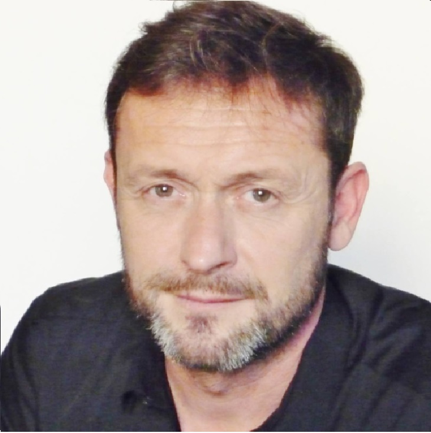

Qui suis-je ?

Je m'appelle Didier.
Mon parcours riche et pluriel m'a mené à accompagner celles et ceux qui ressentent le besoin de se réaligner, de faire des choix ou de mieux se connaître.
J'utilise des outils puissants comme le DISC de Marston et les valeurs de Spranger pour éclairer votre fonctionnement profond.
Mon approche est sensible, non jugeante et tournée vers l’essentiel : vous.
À qui s’adresse ce service ?
- Vous vous interrogez sur un choix professionnel ou personnel important.
- Vous vous sentez en décalage avec votre environnement.
- Vous voulez (re)trouver votre place avec lucidité et confiance.
- Vous préparez un entretien, un concours, une transition.
- Vous souhaitez recruter ou sélectionner un collaborateur en confiance.
Ce que je propose
Un accompagnement personnalisé en 3 temps :
- Évaluation comportementale (DISC) et motivationnelle (Spranger)
Pour poser les bases : ce que vous aimez faire et comment vous le faites. - Débrief individuel (1/2 journée)
Pour révéler vos dynamiques personnelles : vos leviers, vos freins, vos zones d’alignement. - Plan d’action clair
Pour avancer en conscience : orientation, reconversion, posture en entretien, gestion relationnelle…
💡 Pour les prises de parole en public, concours ou entretiens, je propose également des scénarios d'entraînement sur mesure.
✉️ Me contacter :
revelezvostalents@gmail.com
revelezvostalents@gmail.com